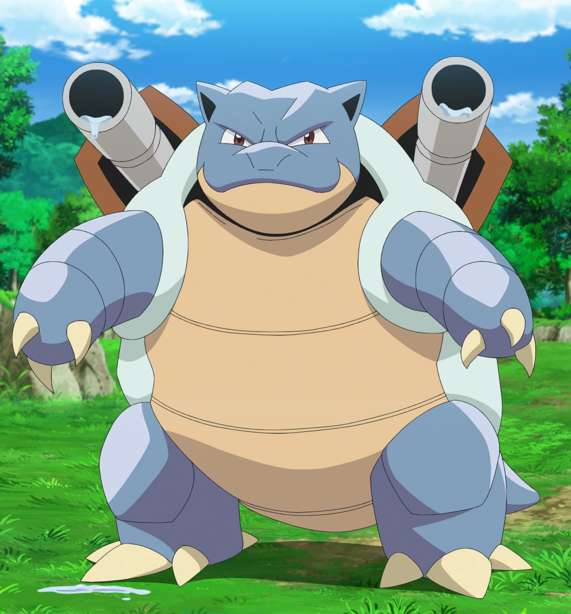

Blastoise The Water Type
Blastoise is a Pokémon, a fictional creature from the popular franchise created by Nintendo, Game Freak, and Creatures. It is the final evolution of Squirtle, one of the original starter Pokémon from the first-generation games. Blastoise is known for its formidable appearance and powerful water-based abilities. It resembles a large, blue, turtle-like creature with water cannons protruding from its shell. These cannons can shoot pressurized water blasts with incredible force, making Blastoise a formidable opponent in battles. Its combination of durability and offensive capabilities has made it a fan favorite among Pokémon trainers, and it has become an iconic symbol of the franchise since its introduction in the late 1990s.

Veiw Blastoise
Venusaur The Grass Type
Venusaur is a well-known and iconic Pokémon, a creature from the popular Pokémon franchise. It is the final evolutionary form of Bulbasaur, one of the original starter Pokémon. Venusaur is a dual-type Grass/Poison Pokémon, characterized by its large, flower-like plant bulb on its back, which has the ability to release a soothing and intoxicating aroma. It is a formidable and powerful Pokémon, known for its lush green appearance, strong defensive capabilities, and the ability to use a variety of Grass-type moves in battles. With its unique combination of strength and natural beauty, Venusaur has become a beloved and recognizable figure in the world of Pokémon, appealing to trainers and fans alike.
 Veiw Venusaur
Veiw Venusaur